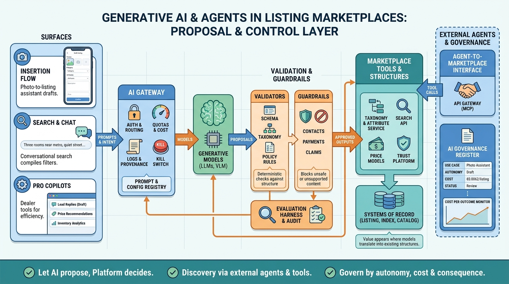

Part VIII — LEADERSHIP: The Chief Architect's Agenda
AI Across the Listing Lifecycle

Image generated by Google Gemini (gemini-3-pro-image-preview)
Part VIII — LEADERSHIP: The Chief Architect's Agenda

Image generated by Google Gemini (gemini-3-pro-image-preview)